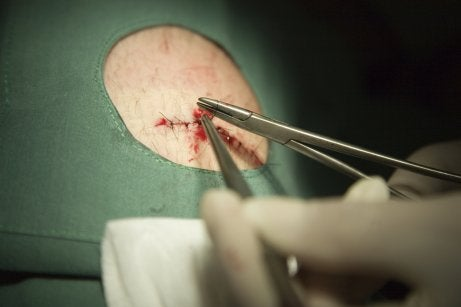
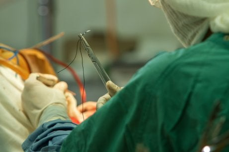
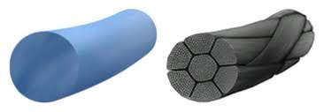

Las suturas son técnicas quirúrgicas que permiten unir los tejidos que han sufrido un corte considerable y fijarlos hasta que cicatricen. A pesar de haber muchos tipos de suturas, todas comparten una serie de características.
Para empezar, podemos hablar del calibre de la sutura, que se refiere al diámetro de la misma. Otra característica es la fuerza tensil, que es la fuerza que puede soportar el hilo.
Otra característica es la capilaridad, que se refiere a la capacidad que tienen los hilos de la sutura para permitir el paso de los líquidos del organismo a lo largo de la línea de sutura. La capilaridad es proporcional a la retención de bacterias, es decir, cuanta más capilaridad tenga una sutura, mayor será el número de bacterias que retenga.
También podemos hablar de la memoria. Esta característica es la tendencia de la sutura a volver a su estado original. Por otra parte tenemos el coeficiente de fricción. Este se refiere al roce que produce la sutura al desplazarse por los tejidos. A mayor fricción, mayor será la seguridad del nudo. Por último está la extensibilidad.
Una forma de clasificar las suturas a a través de la estructura física de la hebra
Las monofilamento son aquellas que, como su nombre indica, están formadas por un solo hilo. En cambio las multifilamento están formadas por un trenzado de múltiples filamentos del mismo o de distinto material.
También podemos distinguir las suturas reabsorbibles de las no reabsorbibles en función de la capacidad de reabsorción de los materiales, pero ¿cómo puede un hilo desaparecer del cuerpo así sin más? Las suturas que son de origen natural se reabsorben porque son atacadas por las enzimas del organismo, que las rompen y facilitan su reabsorción. El problema de éstas es que además de atacar a la sutura, causará una serie de lesiones en los tejidos de alrededor.
En cuanto a las suturas que son de origen sintético, se hidrolizan. Una hidrólisis es una reacción que lleva a cabo el agua al penetrar en la estructura, haciendo que el hilo se disuelva. Esta reacción es menos agresiva para el organismo que el proceso que se lleva a cabo en las suturas de origen natural.